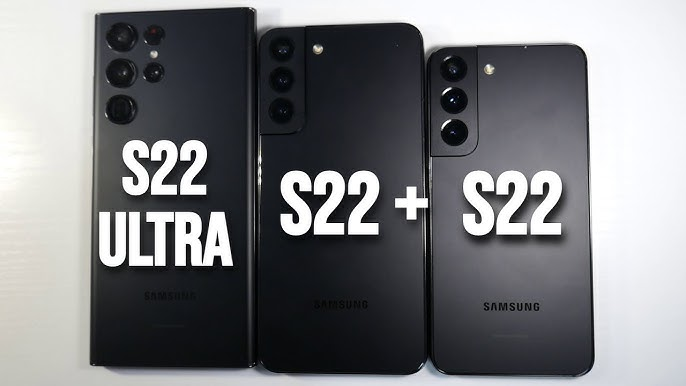
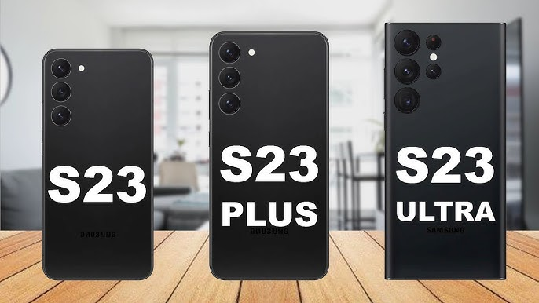
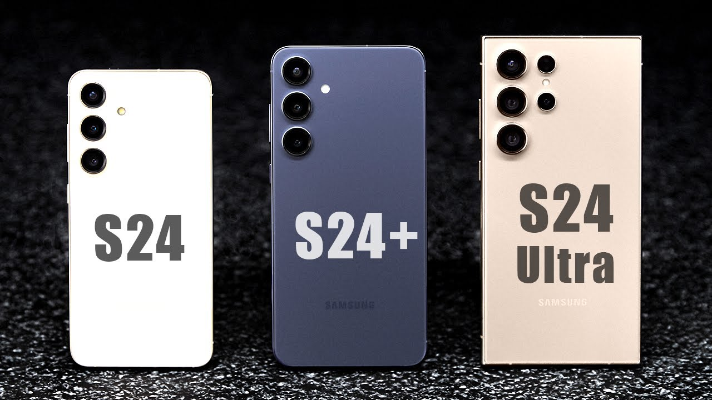
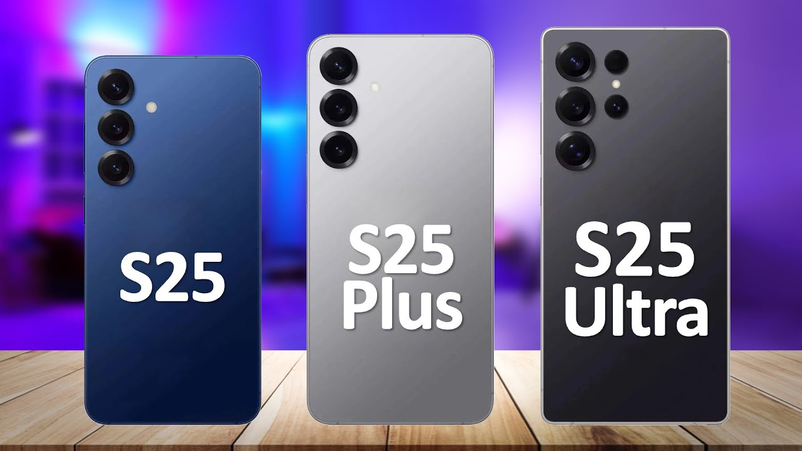

Samsung
Samsung është një konglomerat prodhimi shumëkombësh i Koresë
së Jugut me seli në Samsung Digital City, Suwon , Koreja e Jugut.
Ai përfshin biznese të shumta të lidhura,shumica e tyre të bashkuara
nën markën Samsung, dhe është chaebol (konglomerati i biznesit) më i madh
i Koresë së Jugut. Që nga viti 2024, Samsung ka vlerën e pestë më të lartë
të markës në botë.
Samsung u themelua nga Lee Byung-chul në 1938 si një kompani tregtare.
Gjatë tre dekadave të ardhshme, grupi u diversifikua në fusha duke
përfshirë përpunimin e ushqimit, tekstilet, sigurimet, letrat me vlerë
dhe shitjen me pakicë. Samsung hyri në industrinë e elektronikës në
fund të viteve 1960 dhe në industrinë e ndërtimit dhe të ndërtimit
të anijeve në mesin e viteve 1970; këto zona do të nxisnin rritjen
e saj të mëvonshme. Pas vdekjes së Lee në 1987, Samsung u nda në
pesë grupe biznesi - Samsung Group, Shinsegae Group, CJ Group ,
Hansol Group dhe JoongAng Group.
Filialet industriale të Samsung përfshijnë Samsung Electronics ,
Samsung Heavy Industries , Samsung Engineering dhe Samsung C&T Corporation .
Filialet e tjera përfshijnë Samsung Life Insurance dhe Cheil Worldwide .
Filialet e shquara industriale të Samsung përfshijnë Samsung Electronics
( kompania më e madhe në botë e teknologjisë së informacionit , prodhuesi
i elektronikës së konsumit dhe prodhuesi i çipave të matura me të ardhurat
e vitit 2017),Samsung Heavy Industries (ndërtuesi i dytë më i
madh i anijeve në botë i matur nga të ardhurat e vitit 2010),dhe
Samsung Engineering dhe Samsung C&T Corporation (përkatësisht kompanitë
e ndërtimit të 13-të dhe 36-të më të mëdha në botë).Filialë të
tjerë të dukshëm përfshijnë Samsung Life Insurance (kompania e 14-të më
e madhe në botë e sigurimit të jetës),Samsung Everland (operator
i Everland Resort , parku më i vjetër i temave në Korenë e Jugut)
dhe Cheil Worldwide (i 15-ti më i madhi në botë agjenci reklamash, e
matur me të ardhurat e vitit 2012).
Disa nga llojet me te mira te SAMSUNG:
SAMSUNG GALAXY S21:
SAMSUNG GALAXY S22:
SAMSUNG GALAXY S23:
SAMSUNG GALAXY S24:
SAMSUNG GALAXY S25:
